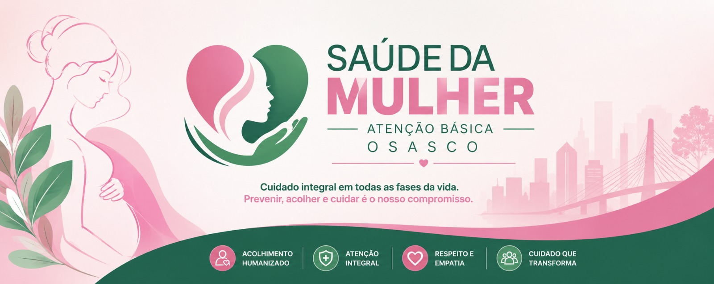

Portal de Protocolos, Artigos e Publicações
Espaço para organização, visualização e download de documentos técnicos da Saúde da Mulher.

Espaço para organização, visualização e download de documentos técnicos da Saúde da Mulher.
Médico com atuação dedicada à Saúde da Mulher, atualmente exercendo a função de Responsável Técnico da Ginecologia e Obstetrícia da Atenção Primária à Saúde do Município de Osasco.
Possui experiência na gestão, organização e qualificação das linhas de cuidado em Ginecologia, Obstetrícia, Planejamento Reprodutivo, Pré-Natal de Alto Risco, Rastreamento dos Cânceres de Mama e Colo do Útero, além da implantação e monitoramento de protocolos assistenciais voltados à saúde feminina.
Ao longo de sua trajetória profissional, tem atuado na estruturação de fluxos assistenciais, regulação de acesso aos serviços especializados, auditoria de prontuários, educação permanente de profissionais de saúde e desenvolvimento de estratégias para ampliação da qualidade do cuidado ofertado às mulheres da rede pública de saúde.
Entre suas principais contribuições destacam-se a implantação da Organização do Cuidado Integral (OCI) para Diagnóstico Inicial do Câncer de Mama no município de Osasco, a expansão do acesso aos métodos contraceptivos de longa duração, a qualificação das linhas de cuidado do pré-natal de alto risco e o fortalecimento das ações de rastreamento e prevenção dos cânceres femininos.